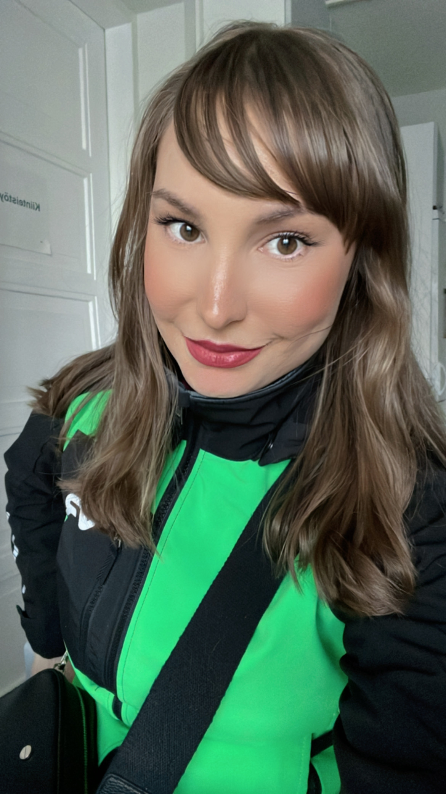
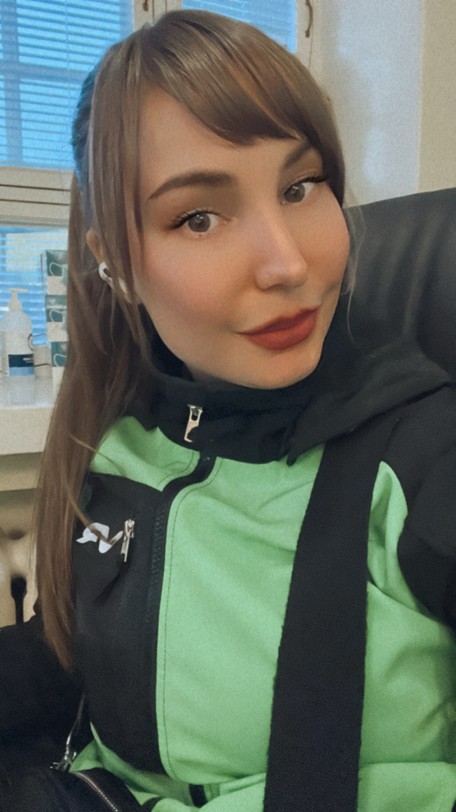

Konduktööri
Olen työskennellyt VR lähiliikenteen konduktöörinä vuodesta 2021 saakka. Työ on vaativaa
asiakaspalvelutyötä.
Lippujen tarkastamisen lisäksi konduktööri vastaa junan turvallisuudesta eli puuttuu
järjestyshäiriöihin.
Tulipalon sattuessa vastaa koko junan evakuoinnista.
Tavallinen työpäivä ei kuitenkaan sisällä jatkuvia jännittäviä tilanteita.
Perus työtehtävät liittyvät matkustajien opastamiseen junasta toiseen ja matkalipputyyppien neuvontaan.

Matkaopas
Olen suorittanut Matkailualan perustutkinnon Helmi Liiketalousopistosta. Erikoistuin opinnoissani
opasapalveluihin.
Matkaoppaan siipiä pääsin kokeilemaan Nazarin matkaoppaana Turkissa. Elämäni parhaimpia kokemuksia.
Matkaoppaan jokainen päivä on erilainen.
Tehtäviini kuului matkustajien vastaanottaminen lentoasemalla vuorokauden ajasta riippumatta. Ohjasin
matkustajat busseihin
ja toivotin heidät tervetulleeksi Turkkiin mikrofoniin puhuen. Lisäksi päivystin hotelleilla ja opastin
retkiä esim. tippukiviluolaan.

Maailmanmatkaaja
Seikkailuni ovat vieneet minut myös Dubliniin, jossa suoritin matkailualan työharjoitteluni. Tehtäviini
kuului suunnitella matkapaketteja,
joita tarjosin pienille sekä isoille ryhmille. Minun työhöni kuului selvittää oliko matkustajan
toivomassa hotellissa tarvittava määrä huoneita vapaana
ja paljonko majoitus maksaa. Lisäksi ehdotin vieraille erilaisia ravintoloita ja retkiä vierailtavaksi.
Olen asunut myös Marokossa. Työskentelin siellä puhelinhaastattelijana. Työn ohessa pääsin tutustumaan
Marokon mielenkiintoiseen
kulttuuriin. Lisäksi pidän matkustamisesta muutenkin erittäin paljon. Elämäntilanteen salliessa pyrin
matkustamaan muutaman kerran vuodessa.